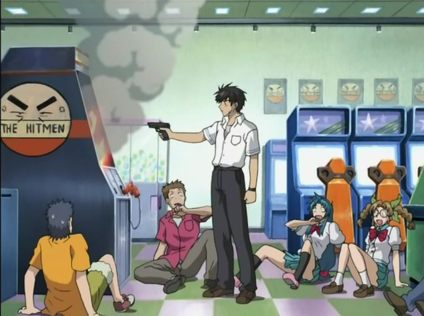

When it comes to "Full Metal Panic!" (the anime), hardcore fans are probably familiar with the first season, and with the second sesaon ("The Second Raid"). They might even be familiar with the third season called "Invisible Victory" that came out over a decade later. But those were technically the third and fourth seasons, as the official second season was a 2003 spinoff show called "Full Metal Panic? Fumoffu." For many anime viewers, "Fumoffu" might even be more familiar than the original series, based on how effectively advertised it was in comparison. Technically, "Fumoffu"'s story is canon, taking place in-between the first season and "The Second Raid," although nothing of real consequence occurs in the show. The reason I refer to it as a spin-off show is that the first season of "Full Metal Panic!" balanced carefully between serious action-thriller and wacky high-school romantic comedy. I use the word "carefully" loosely; Studio Gonzo had some trouble blending the two genres properly, often regulating both in completely separate episodes. The original story involved Sousuke Sagara, a young, dead-pan soldier assigned to protect high school girl Kaname Chidori without letting her be aware of the circumstance. Sousuke originally worked with his squad, piloting a large mecha suit to deal with international terrorists around the world. In "Fumoffu," no mech suits are present. Even the existance of the secret organization Mithril is ignored until the second-half of the show. "Fumoffu" almost entirely abandons the thriller aspect in favor of pure comedy, even going overboard with the antics that occur at the Japanese high-school. If you have watched the original series, you might be slightly taken aback, or be rather pleased. Alternatively, a newcomer can enjoy "Fumoffu" without having seen the first season, but might enjoy character interactions more had they seen it. The comedy episodes in the first season never really worked for me, even though the concept of a soldier using guns and bombs in a school where such tools are entirely unnecessary (and where cartoon victims never suffer realistically for it) makes for good comedy. The first couple of episodes of "Fumoffu" gave a similar impression, but I gave in and had fun with the light-hearted tone as it progressed. As for story, the season introduces the student committee, lead by a calm leader with a Japanese fan at all times, often insisting on some of the silly situations Kaname has to put up with. Slapstick humor is more extreme and more frequent. Comedy doesn't always come off well in Japanese anime for international viewers, but I had some genuine laughs at some of the episodes. Some of the best moments come from Bonta-kun, the unofficial mascot of the light novel author and of Kyoto Animation; a fictional mouse-like cartoon, Sousuke wears a large amusement-park suit of him in multiple episodes to hide his identity, speaking variations of the word "fumoffu!" as he aims his rifle (hence the source of the series title). It isn't all comedy gold, however. In particular, most of the situational comedy comes from Kaname being targeted for kidnapping, requiring Sousuke to save her. Typically, Kaname (or other girls) are threatened with rape by thugs, and one gets the sense that the girls in the city are simply used to that type of threat. It's outdated and a little gross. Some of Souskue's methods to save Kaname are also a bit "extreme," making it difficult to laugh when it soldier threatens the life of an enemy with such seriousness. Supposedly, one episode was even banned from broadcast on Japanese television after it was decided to mirror too closely to a real current-times crime. These moments would be difficult to edit out entirely, so a viewer will simply have to put up with it to enjoy the best jokes.  There is also a bit more fanservice than other seasons of "Full Metal Panic!". This counts as a romantic-comedy due to the relationship between Sousuke and Kaname, after all, and any anime in that genre requires a bit of skin. Relatively, there isn't much, but episodes 9 and 12 end up showing a lot without explicit nipples (9 in particular, taking place at a hot-spring, is more daring than even more modern anime). It's presence, or lack-there-of in most of the episodes, may also affect your personal enjoyment (I personally didn't mind). The production values are slgihtly different: the studio and director changed, from Gonzo to Kyoto Animation, and with new director Yasuhiro Takemoto. Kyoto Animation is famous for their quality today, but "Fumoffu" happens to be their first known series. The quality doesn't initially appear improved over Gonzo's effort: it's rendered in 4:3 aspect ratio, limited in detail and character movement, and retaining the same (somewhat dated) character designs. Without the best dramatic moments of the serious first season, there aren't many beautiful shots in the middle of action. The best I can say is that Kyoto doesn't use much 3D animation, which is less ambitious, but also makes the show appear more consistent. There are moments where the animation really shines, though. In particular, episodes 9 and 12 have moments of surprisingly strong animation, hinting at the high-level of quality that they would create for "The Second Raid" years later. It seems to occur when digital-animation (drawn on a computer screen instead of on physical paper or cels) is used. Both processes are used interchangably, particularly noticable in sharpness differences between scenes on a Bluray. If the entire series looked as good as some of these scenes, "Fumoffu" would probably hold up better today as a modern classic of comedy anime. But there simply aren't enough scenes like these to represent the whole show, and for a studio just starting out, some forgiveness is required.The music is peppy, but less memorable or quality-driven as the original series. The opening and ending themes are slightly better, but still not particularly memorable for an anime. The English dub is par for the series, but the actors seem to be more comfortable with the fun of the script. Curiously, there is a noticable lack of special features on the Funimation Bluray compared to the other seasons. For a variety of reasons, "Full Metal Panic? Fumoffu" ages slightly better than the first season, and as much as I preferred the action-thriller aspects, it was a better move for "Fumoffu" to focus on just one genre. Therefore, I would actually rank "Fumoffu" as better than the first season. Even outside the franchise, it succeeds more than it stumbles as an anime-comedy, and good anime comedies are difficult to find.
- "Ani" More reviews can be found at : https://2danicritic.github.io/ Previous review: review_Full_Metal_Panic!_-_The_Second_Raid Next review: review_Funan